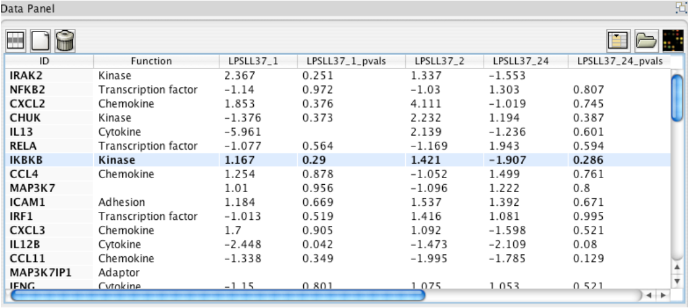
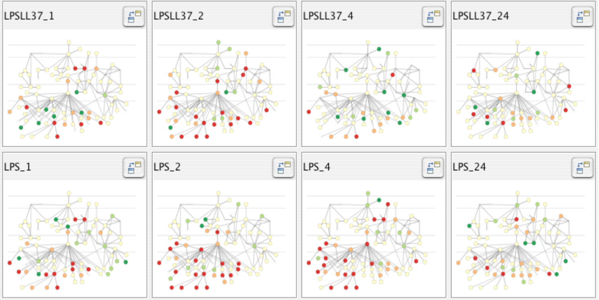
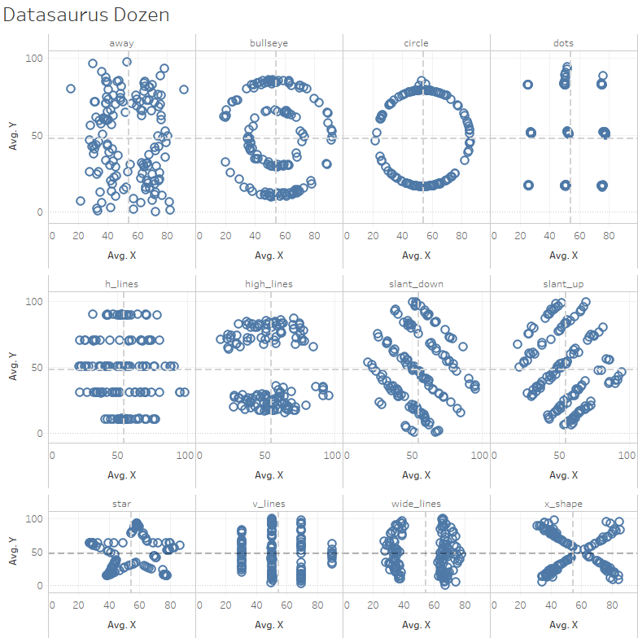
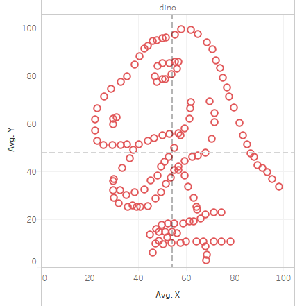
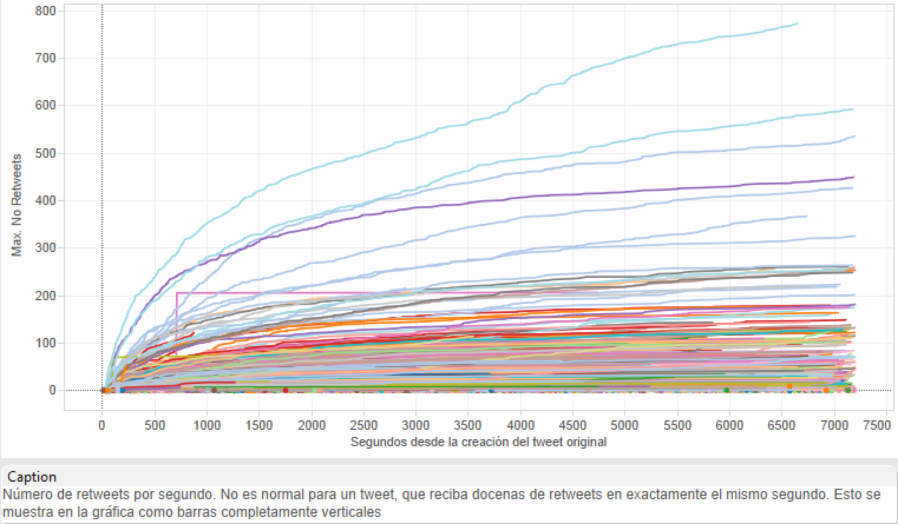
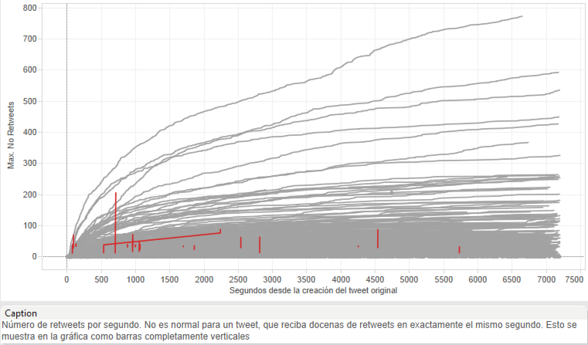
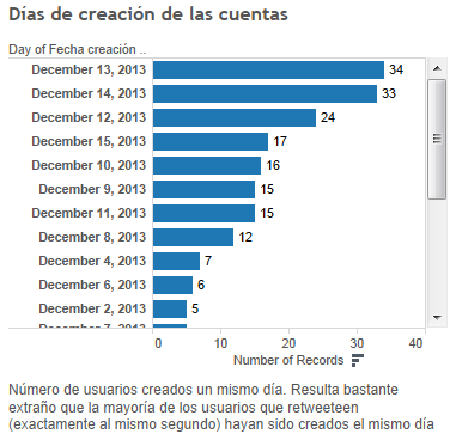
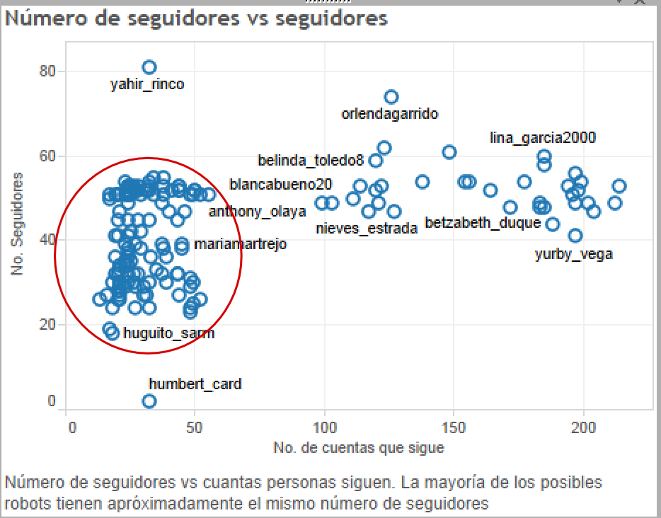

Introduction
MIDS W209: Information Visualization
https://johnguerra.co/lectures/MIDS_W209_Information_Visualization/01_Introduction/

What we are going to learn
- Infovis definition
- Why should we visualize?
- What are insights?
- Problem abstraction
- Visualization tools landscape
Definitions
Defining Information Visualization (vis)
Computer-based visualization systems provide visual representations of datasets designed to help people carry out tasks more effectively.
Why?
Have the human in the loop
Visualization is suitable when there is a need to augment human capabilities rather than replace people with computational decision-making methods.
Three requirements
When not to use vis
Don’t need vis when fully automatic solution exists and is trusted
But...
- Many analysis problems are ill-specified.
- Don’t know exactly what questions to ask in advance
What vis allows for
- Long-term use for end users (e.g., exploratory analysis of scientific data)
- Presentation of known results
- Stepping stone to better understanding of requirements before developing models
- Helps developers of automatic solution refine/debug, determine parameters
- Helps end users of automatic solutions verify, build trust
Why use an external representation?
Computer-based visualization systems provide visual representations of datasets designed to help people carry out tasks more effectively.
Why use an external representation?
External representation: replace cognition with perception
[Cerebral: Visualizing Multiple Experimental Conditions on a Graph with Biological Context. Barsky, Munzner, Gardy, and Kincaid. IEEE TVCG (Proc. InfoVis) 14(6):1253-1260, 2008.]
Why use a computer in the loop?
Computer-based visualization systems provide visual representations of datasets designed to help people carry out tasks more effectively.
Why have a computer in the loop?
- Beyond human patience
- Scale to large datasets
- Support interactivity
Why depend on vision?
Computer-based visualization systems provide visual representations of datasets designed to help people carry out tasks more effectively.
Why depend on vision?
- Human visual system is high-bandwidth channel to brain
- Overview possible due to background processing
- Subjective experience of seeing everything simultaneously
- Significant processing occurs in parallel and pre-attentively
- Sound: lower bandwidth and different semantics
- Overview not supported
- Subjective experience of sequential stream
- Touch/haptics: impoverished record/replay capacity
- Only very low-bandwidth communication thus far
- Taste, smell: no viable record/replay devices
Why show data in detail?
- Summaries lose information.
- Confirm expected and find unexpected patterns.
- Assess validity of statistical model.
Visualization Design Space
Idioms
Distinct approach to creating or manipulating visual representations
Exercise
Let's find in how many ways we can visualize two, numbers 13 and 23.
Idiom design space
The design space of possible vis idioms is huge and includes the considerations of both how to create and how to interact with visual representations.
Idioms
- How to draw it: visual encoding idiom
- Many possibilities for how to create
- How to manipulate it: interaction idiom
- Even more possibilities
- Make single idiom dynamic
- Link multiple idioms together through interaction
Why focus on tasks and effectiveness?
Computer-based visualization systems provide visual representations of datasets designed to help people carry out tasks more effectively.
Why focus on tasks and effectiveness?
- Tasks serve as constraint on design (as do data)
- Idioms do not serve all tasks equally!
- Challenge: recast tasks from domain-specific vocabulary to abstract forms
- Most possibilities ineffective
- Validation is necessary, but tricky
- Increases chance of finding good solutions if you understand full space of possibilities
What counts as effective?
- Novel: enable entirely new kinds of analysis
- Faster: speed up existing workflows
Resource limitations
Vis designers must take into account three very different kinds of resource limitations: those of computers, of humans, and of displays.
Computational limits
- Processing time
- System memory
Human limits
- Human attention
- Memory
- Retention
Display limits
- Pixels are precious resource, the most constrained resource
- Information density: ratio of space used to encode information vs. unused white space
- Trade-off between clutter and wasting space, find sweet spot between dense and sparse
The purpose of visualization is insight, not pictures
The purpose of data science is insight, not (just) models
Anscombe's quartet
| I | II | III | IV | ||||
|---|---|---|---|---|---|---|---|
| x | y | x | y | x | y | x | y |
| 10.0 | 8.04 | 10.0 | 9.14 | 10.0 | 7.46 | 8.0 | 6.58 |
| 8.0 | 6.95 | 8.0 | 8.14 | 8.0 | 6.77 | 8.0 | 5.76 |
| 13.0 | 7.58 | 13.0 | 8.74 | 13.0 | 12.74 | 8.0 | 7.71 |
| 9.0 | 8.81 | 9.0 | 8.77 | 9.0 | 7.11 | 8.0 | 8.84 |
| 11.0 | 8.33 | 11.0 | 9.26 | 11.0 | 7.81 | 8.0 | 8.47 |
| 14.0 | 9.96 | 14.0 | 8.10 | 14.0 | 8.84 | 8.0 | 7.04 |
| 6.0 | 7.24 | 6.0 | 6.13 | 6.0 | 6.08 | 8.0 | 5.25 |
| 4.0 | 4.26 | 4.0 | 3.10 | 4.0 | 5.39 | 19.0 | 12.50 |
| 12.0 | 10.84 | 12.0 | 9.13 | 12.0 | 8.15 | 8.0 | 5.56 |
| 7.0 | 4.82 | 7.0 | 7.26 | 7.0 | 6.42 | 8.0 | 7.91 |
| 5.0 | 5.68 | 5.0 | 4.74 | 5.0 | 5.73 | 8.0 | 6.89 |
| Property | Value |
|---|---|
| Mean of x | 9 |
| Variance of x | 11 |
| Mean of y | 7.50 |
| Variance of y | 4.125 |
| Correlation between x and y | 0.816 |
| Linear regression | y = 3.00 + 0.500x |
| Coefficient of determination of the linear regression | 0.67 |
Anscombe's visualized
More examples, same statistics
Datasaurus!
Visual Analytics
Traditional
Pros:
Cons:
|
Data Mining/ML
Pros:
Cons:
|
InfoVis
Pros:
Cons
|
In Infovis, we look for insights
- Deep understanding
- Meaningful
- Non-obvious
- Actionable
- Based on data
An insight is:
- Something that the user can learn from the data using the infovis
- Which she didn't know/expect
- Also, is useful/needed for her
- Moreover, she didn't know of it
- And that she can leverage
Insights
Tweetometro
Task: Twitter behavior during presidential elections
User: me
Normal tweets
Weird tweets?
Creation dates
Number of followers

What car to buy?
User: person buying a car
Task: What's the best car to buy?
Data: all cars on sale
Normal procedure
Ask friends and family
Problem
That's inferring statistics from a sample n = 1
Better approach
Data-based decisions
Jeep Willys
- Colombia bought many Jeeps after the war
- They are the a sort of mountain taxi
- There is a trend to pimp them up
Problem Abstraction
What/Why/How
- What is visualized?
- data abstraction
- Why is the user looking at it?
- task abstraction
- How is visualized?
- idiom visual encoding and interaction

Abstraction Example
SpaceTree
http://www.cs.umd.edu/hcil/spacetree/SpaceTree
TreeJuxtaposer
https://www.cs.ubc.ca/~tmm/papers/tj/TreeJuxtaposer
Practice
The visualization tool space
Interview Jeffrey Heer
Web Development Basics
https://observablehq.com/@observablehq/introduction-to-htmlIntroduction to Observable
Choose your tool
Introduction to D3
https://observablehq.com/@d3/learn-d3Introduction to Vega-lite
https://observablehq.com/@uwdata/introduction-to-vega-liteIntroduction to Python and Altair
https://altair-viz.github.io/getting_started/overview.htmlInterview Jake VanderPlas, Part 1
Introduction to Tableau
https://www.tableau.com/learn/get-started/creatorWhat we learned
- Infovis definition
- Why should we visualize?
- What are insights?
- Problem abstraction
- Visualization tools landscape